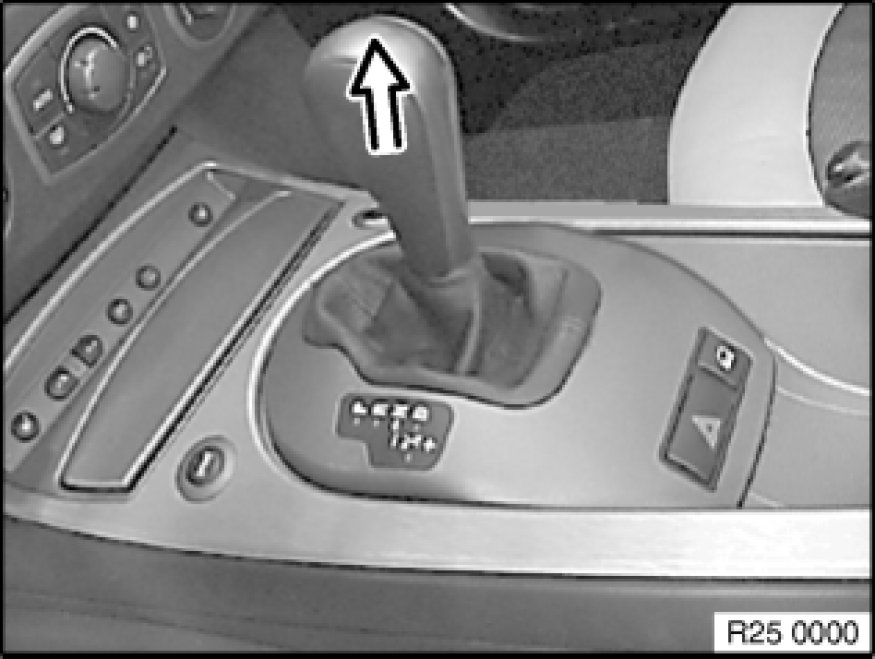

25 16 061 - Replacing grip/knob for shift lever
25 16 061 - Replacing grip/knob for shift lever

Note:
The method for removing the grip/knob is identical for manual and automatic transmissions.
Do not twist grip/knob when removing as the turning lock in the knob will shear off.
Detach grip/knob in direction of arrow with a firm tug.
Note:
Illustrations show E85.
Installation:
Fit grip/knob on shift lever, align and press on until it can be felt to snap into place.